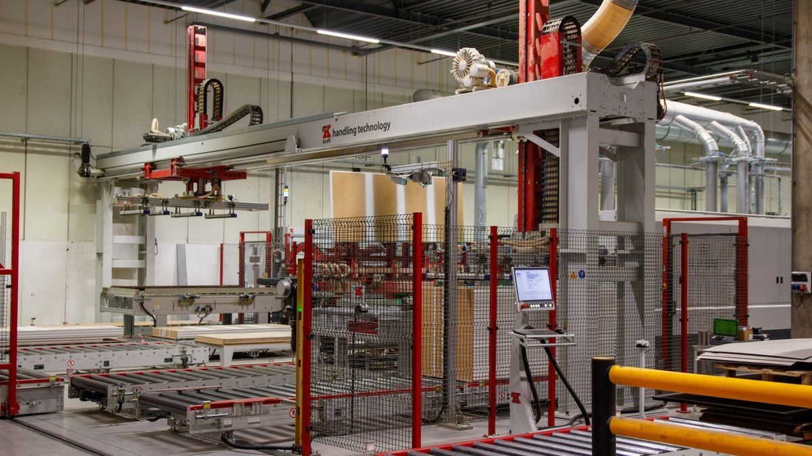
01黑灯工厂 / LIGHTS-OUT
无人化产线
输送、装配与检测自动接力，车间可以关灯运行，人从操作者变成监控者。
查看现场 →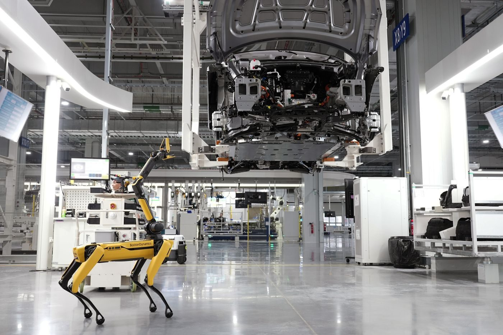
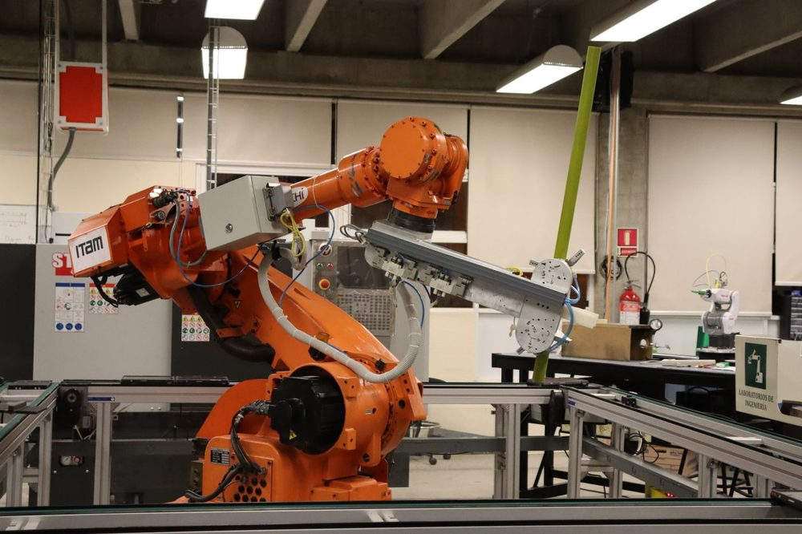
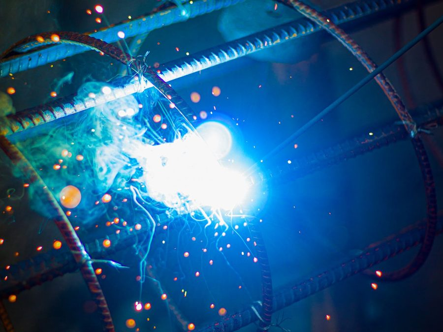
变量：y = f ( 庞大人口红利, 密集资源投入 )
分析：过去几十年，依靠要素驱动，中国制造完成了从无到有的规模扩张。
参数变化：劳动力成本 ↑ / 资源环境约束 ↑ / 全球价值链高端锁定 ✖
分析：旧模型核心引擎失速，传统粗放型发展模式的边际效益已触顶。
新变量：[ 新质生产力 ] = 科技创新 × 数字化 × 人工智能
分析：既然旧路走不通，破局的关键就在于用 AI 算力和数字技术重塑实体经济。
数据成为新的生产要素，算法成为新的生产工具。
从“机器换人”到“数据驱动”，六个现场正在发生。
* 数据来源：工业和信息化部、国家统计局、中国信息通信研究院公开资料（截至最新公开数据）。
传感器、工业相机与设备日志，把车间变成可读的数据流。
边缘节点与工业云协同，让推理在离产线最近的地方发生。
视觉、时序与工业大模型，把经验沉淀为可复制的参数。
机器人、AGV 与控制系统接令，形成“感知—决策—执行”闭环。

01输送、装配与检测自动接力，车间可以关灯运行，人从操作者变成监控者。
查看现场 →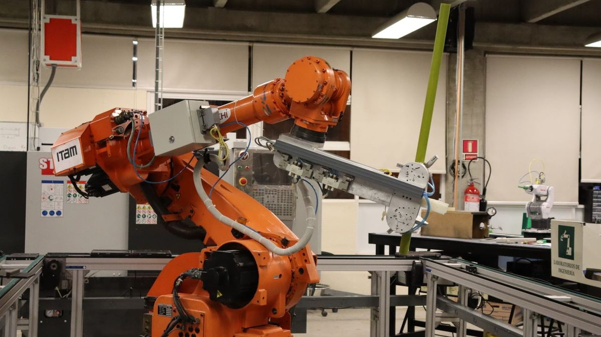
02六轴机器人配合视觉引导，完成焊接、搬运、装配等重复工序，节拍由算法统一调度。
查看现场 →工业相机以毫秒级节拍逐件拍摄，AI 在缺陷流入下道工序之前把它拦下来。
查看现场 →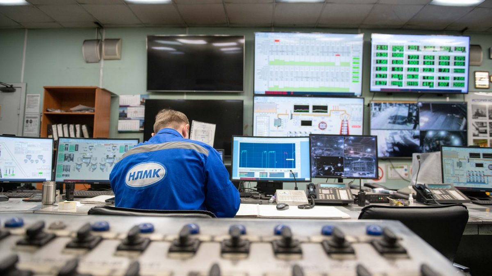
04物理产线在屏幕上拥有一个实时同步的“双胞胎”，新工艺先在虚拟空间里跑一遍。
查看现场 →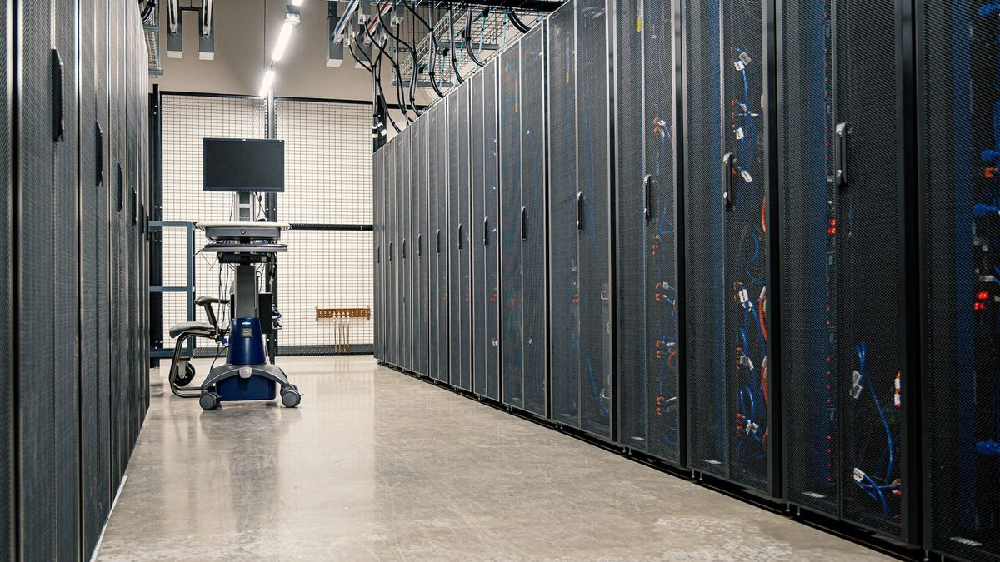
05边缘节点就近推理，工业大模型把工艺文档、维修记录变成一线工人可问答的知识库。
查看现场 →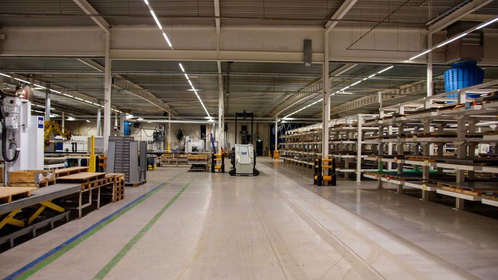
06AGV/AMR 按订单自动搬运，立体仓库用算法调度货位，物流节拍与产线计划对齐。
查看现场 →当火箭发动机的精密件也交给无人产线，AI 质检、数字孪生与自动物流在同一个车间里协同运转。
使用播放器控制栏可调节音量、进度与全屏。
assets/img/ 下的同名文件即可。
从传统控制台到算力机房，制造现场正在被重新定义
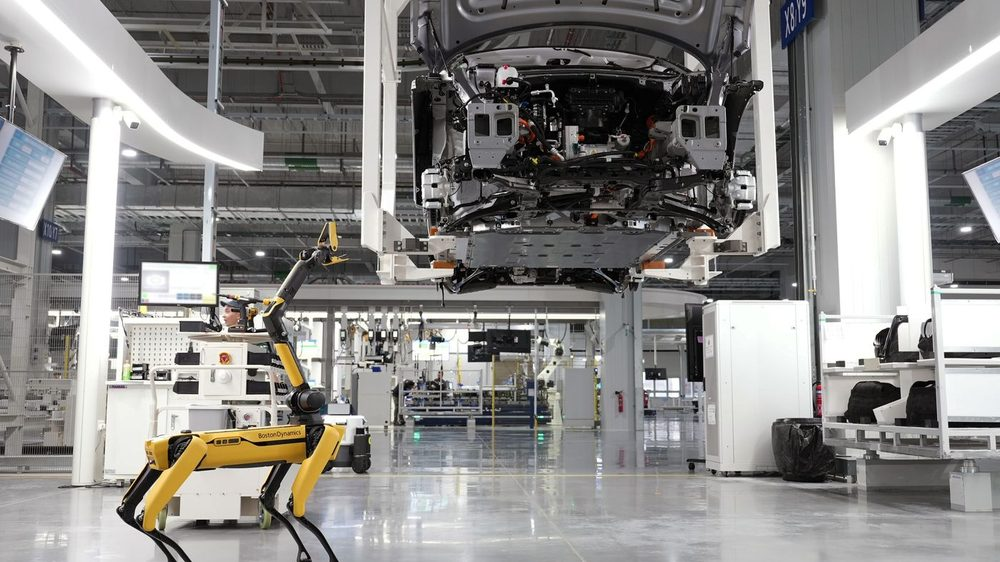
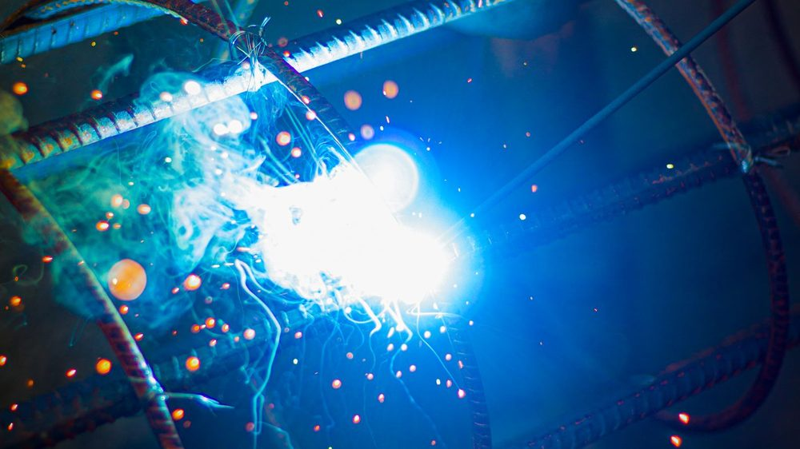
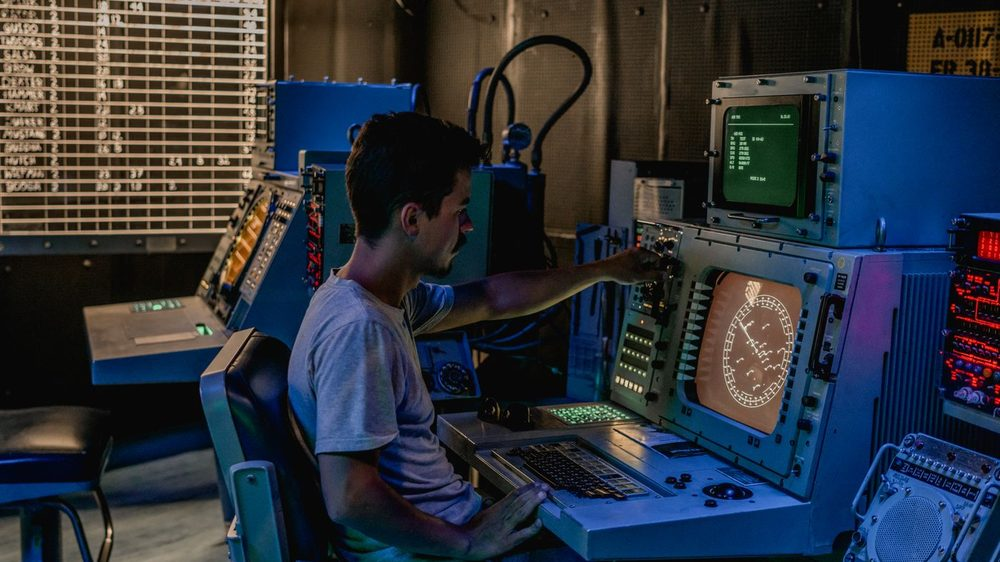
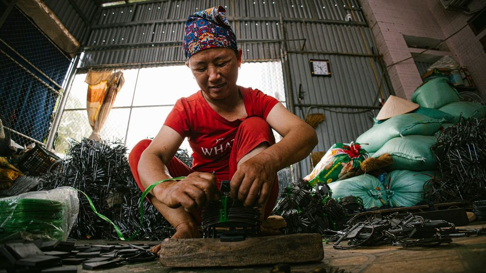
课程名称：习近平新时代中国特色社会主义思想概论
以数字技术讲好中国智造故事，把代码写在祖国的大地上。
完成 AI 辅助数据的人工核验，将核心指标全面锁定在工信部与信通院官方报告中，确保数据口径精准无误。
将纯前端轻量级代码彻底开源，打造可供全国高校复用的思政数字化底座，让技术普惠真正落地。
计划接入工业大模型 API，实现“输入产业问题，实时生成智造升级逻辑图”的全景动态推演。
带着大屏冲刺“青声思政宣讲台”，用青年之声讲透新质生产力；持续维护 GitHub 仓库，把课程作业转化为长效数字化工具。